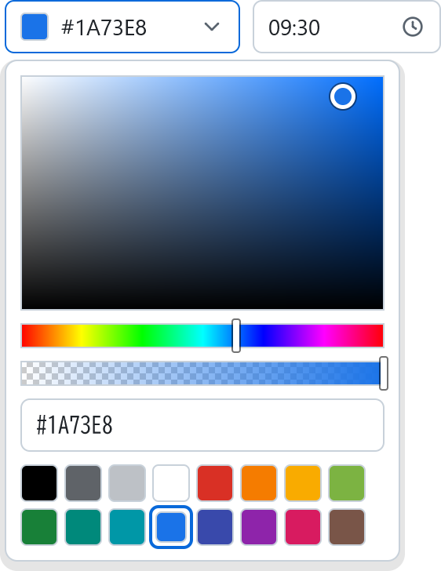

kargui 開発レポート ・ 第 8 章
色と時刻の選択
0.2 の後の 4 つ目として、色の選択と時刻の選択を足しました。どちらも、欄を押すと下に選ぶ物が出る部品です。今ある部品（日付の選択の重ねて出す層・スライダーの引っ張り・入力欄）を組み合わせて作りました。この章では、時刻をます目にした理由、色の面の描き方、そして作者の手の確かめで見つかった 3 つのことを書きます。3 つ目は、色の選択とは関係なく、全部の入力欄で引っ張って文字を選べないという、前からの不具合でした。最後に、GitHub に送った後の CI で見つかったことを書きます。
この章で分かること
- 時刻の選択を、スクロールする列ではなくます目にした理由
- 濃淡の塗りを持たない描き方で、色の面と帯を描く方法
- 灰色を通っても色相を忘れない、選んだ色をずらさない、という細かい決まり
- 打っている途中の値を使ってはいけない理由（作者の記録から）
- 2 回押しを数える場所を、窓の処理にした理由
- 写真の比べが CI でだけ落ちた時に、違う場所を測って原因を決めた手順
時刻の選択: 列ではなくます目
ui.time_picker(&mut 時刻) は、押すと時と分のます目を出します。時を選ぶと分のます目へ移り、分を選ぶと閉じます。矢印で動き、Enter か Space で選び、Esc で閉じます。分は 5 分ずつで、.minute_step(15) のように刻みを変えられます。

WinUI の時刻の選択は、時と分を縦にスクロールする列で選びます。kargui でも最初は列で作るつもりでした。ところが kargui のスクロールの入れ物は、作る時にスクロールの位置を決めます。開いたその回に、選んでいる時刻の所までスクロールしておくのが難しい作りです。そこで、スクロールの要らないます目にしました。時は 6 列 × 4 行の 24 個、分は刻みが 5 分なら 12 個です。日付の選択の暦と同じく、読み上げソフトには「時」と「分」という名前の 2 つの格子として伝わります。
ui.time_picker(&mut t).minute_step(15) の .minute_step は、time_picker の呼び出しの後に付きます。ます目は呼び出しの中で作るので、その回には間に合いません。第 7 章の入力欄の書体と同じく、設定を覚えておいて次のフレームで使います。ます目が出るのは欄を押した後なので、開いた時にはいつも効いています。
色の選択: 濃淡の面を絵で描く
ui.color_picker(&mut 色) は、押すと次の物を出します。彩度（左から右）と明るさ（下から上）の面、色相の帯、色の番号（#RRGGBB）の欄、見本の 16 色です。.alpha() を付けると不透明度の帯が増えます。

.alpha() 付き）。面と帯は、色を計算した絵を画像として描く。kargui の描く道具は、四角・角の丸い四角・文字・画像を描けますが、濃淡の塗り（グラデーション）を持ちません。面と帯は、画素の色を計算した絵を作り、画像として描きました。232 × 150 の面でも 3 万 5 千画素なので、作るのは一瞬です。同じ絵は作り直さないよう、最近の 8 枚を覚えておきます。Direct3D 11 の描き方（既定ではない）はまだ画像を描かないので、そちらでは面と帯が出ません。
細かい決まり
| 決まり | 理由 |
|---|---|
| 開いている間は、色を HSV（色相・彩度・明るさ）で持つ | 灰色（彩度 0）には色相が無い。RGB だけで持つと、彩度を 0 まで下げて戻した時に、色相が赤（0 度）に変わる |
| 見本と番号で選んだ色は、HSV を通さずに返す | HSV に変えて戻すと、値が 1 億分の 1 ほどずれる。アプリが見本の色と == で比べると、同じにならない |
| 面の位置は「幅 − 1」で割る | 幅で割ると、いちばん右の画素を押しても彩度が 1 にならない（#FF0000 のはずが #FD0101）。試験で見つけた |
作者の手の確かめで見つかった 3 つのこと
作者が設定の見本で、面を引っ張る・見本を押す・番号を打つ・時刻を選ぶを試しました。記録を読むと、3 つのことが見つかりました。
1. 打っている途中の番号で、色が飛んだ
作者は番号の欄の #8E24AA を Backspace で消し、#FF8800 と打ちました。記録には、途中で色が 3 回変わった跡がありました。
| 欄の文字 | その時の色 | 作者がしたかったこと |
|---|---|---|
#8E2 | #88EE22（黄緑） | 消している途中 |
#FF9 | #FFFF99（薄い黄） | 打っている途中 |
#FF8 | #FFFF88 | 打っている途中 |
#FF8800 | #FF8800（橙） | これが欲しかった |
3 桁の番号（#RGB）も正しい色の番号なので、読めた時にすぐ色にしていました。打ったり消したりする途中は、たまたま 3 桁になるたびに色が変わります。直した後は、打っている間は 6 桁（.alpha() なら 8 桁も）になった時だけ色を変え、3 桁は Enter で決めた時だけ読みます。作者の手順と同じ試験を先に書き、直す前の作りで同じ #88EE22 になって落ちることを確かめました。
入力欄の文字は、打ち終えるまで途中の形を通ります。途中の形がたまたま正しい値になることがあり、それを使うと画面が意図しない値に飛びます。打ち終えたと分かる形（決まった桁数）か、Enter で決めた時だけ使ってください。
2. 同じ記録が 3 回ずつ書かれていた
面を引っ張っている間、色が変わった記録（color.pick）が、同じ時刻に 3 回ずつ並んでいました。第 1 章のとおり、kargui は 1 フレームの中でビューを何回か回します（入力を渡す回・描く回・画面がそろうまで回し直す回）。押している間はどの回も「動かした」と判断し、同じ色を 3 回書いていました。色そのものは正しく変わっていたので、記録だけの問題です。色が実際に変わった回だけ書くように直し、次の確かめでは、記録の数がアプリの記録（accent）と同じ 65 回になりました。
3. 入力欄を引っ張っても、文字を選べなかった
作者から「色の番号の欄を引っ張っても選べない。Backspace を連打するしかないのか」という知らせがありました。調べると、色の選択の欄だけでなく、kargui の全部の入力欄で同じでした。入力欄は、押した瞬間の位置だけを覚えてキャレットを置き、押したまま動かした位置を使っていませんでした。2 回押しで単語を選ぶ仕組みもありませんでした（Ctrl+A で全部を選ぶことはできました）。
直した後は、押したまま動かすと押した所からそこまでを選びます。2 回押しは単語、3 回押しは 1 行の欄なら全部、何行も書く欄なら押した行を選びます。
2 回押しを数える場所は、kargui の中（入力の振り分け）ではなく、窓の処理にしました。理由は 2 つです。1 つは、Windows の設定（2 回押しの速さと距離）をそのまま使えることです。もう 1 つは試験台です。試験台の時計は止まっているので、時刻で数えると、試験の中で同じ欄を 2 回 click しただけで 2 回押しになり、今ある試験が壊れます。窓の処理が数えて押した出来事に回数を付け、試験台では試験が double_click・triple_click で回数を決める形にしました。作者の確かめの記録には、押した回数が 1・2・3 と並び、引っ張って選んだ番号を打ち直せていました。
試験台の drag は、押す・動かす・離すを 1 回で送ります。入力欄の引っ張りを確かめる試験は無く、作者が本物の窓で試すまで、選べないことに気づきませんでした。部品を足す時は、その部品の中の入力欄のように「前からある部品」の使い方も、作者の手の確かめの手順に入れるようにします。
CI で見つかったこと: 番号の欄だけ写真が違った
色と時刻の選択の 3 つの記録（70e97eb・28a1f11・b536a2a）を GitHub に送ると、CI の Windows で文書の確かめ（Documentation checks）だけが落ちました。macOS と Linux は通りました。落ちたのは部品の写真の比べです。手引きに載せる写真を試験台で撮り直し、保存してある写真とバイト単位で比べます。色の選択の明・暗の 2 枚が「今の見た目と違う」と出ました。落ちた仕事を走らせ直しても、同じ 2 枚が違いました。
最初は、字の形の違いと見立てました。写真の中で「#」の字が出るのは、色の選択だけです。CI の Windows（Server 2025）と手元の Windows 11 で書体の版が違い、この字の形が変わったのだろう、という見立てです。WSL の Linux で同じ比べを走らせると、違うのは「#1A73E8」の文字の 2 か所だけでした。色の面や帯、つまみ、見本の色は 1 画素も違いません。これも見立てに合うように見えました。
ただ、CI で実際にどこが違ったのかは、まだ見ていませんでした。比べる処理に、違う画素の数と範囲を出す機能を足して送り、CI の出力を読みました。違ったのは番号の欄の 1 か所だけで、上の欄の同じ「#1A73E8」は一致していました。字の形が版で変わったのなら、両方の欄が違うはずです。見立ては間違いでした。
| 環境 | 違う画素 | 違う範囲 |
|---|---|---|
| 手元の Windows（写真を作った PC） | 0 | なし |
| CI の Windows | 414 | 番号の欄（x 32〜95、y 248〜271） |
| 手元で等幅の候補から BIZ UD ゴシックを外した時 | 414 | 番号の欄（x 32〜95、y 248〜271） |
| WSL の Linux（書体そのものが違う） | 1001 | 上の欄（x 48〜119、y 16〜39）と番号の欄（x 32〜87、y 248〜271） |
番号の欄は、等幅の書体（.monospace()）で作っていました。第 7 章のとおり、等幅の書体は BIZ UD ゴシック、Consolas、MS ゴシックの順に、入っている物を使います。CI の Windows には BIZ UD ゴシックが無いので、番号は Consolas で出ていました。手元で候補から BIZ UD ゴシックを外して比べると、CI と同じ 414 画素・同じ範囲の違いになりました。上の欄は UI の書体なので、どちらの PC でも同じ形です。
直し方は、写真の比べ方を変えることにしました。試験台から、文字の形を描いた四角の位置を受け取れるようにします。CI の時だけ、違う画素が全部この四角（まわり 3 画素まで）の中なら通します。文字の外の違い（色・枠・配置・絵）は、CI でも 1 画素で落とします。手元の比べは、今までどおり完全に一致する時だけ通ります（4cab4a1）。保存してある写真の画素をわざと変えて、次の 4 つを確かめました。
- 手元・変更なし: 通る
- CI と同じ扱い・文字の外の 1 画素を変える: 落ちる
- CI と同じ扱い・文字の中の 1 画素を変える: 「文字の形だけ違う」と出て通る
- 手元・文字の中の 1 画素を変える: 落ちる
送った後の CI は、3 つの OS とも通りました。プログラムのコメントにも最初の見立てを書いていたので、正しい原因に書き直しました（7492df6）。
最初の見立ては、手元と WSL の結果からの推測でした。CI で実際に違った場所を出すと、すぐに間違いと分かりました。等幅の指定を探した時に、大文字の Monospace だけで探し、小文字の .monospace() を見落としたことも、見立てを外した理由です。写真の比べのように「違う」とだけ出る確かめでは、先に違う場所と量を出してから原因を決めてください。
軽さ
色と時刻の選択を使わないタスク帳は、前の版と同じ時に交互に測って、起動 52〜55 ms（前の版は 52〜58 ms）、メモリも同じでした。実行ファイルは 31 KB 増えて 1.37 MB です。濃淡の絵は色の選択を開いた時に初めて作るので、使わないアプリでは作りません。